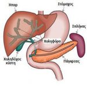
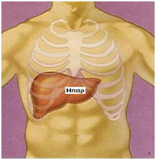
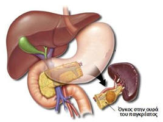
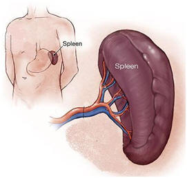
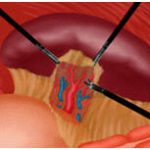

Οι χειρουργικές παθήσεις των χοληφόρων, του ήπατος, του παγκρέατος, αλλά και του σπληνός παραδοσιακά περιγράφονται ως ενιαίο κεφάλαιο της χειρουργικής. Αυτό οφείλεται στο ότι αποτελούν ένα στενά συνδεδεμένο ανατομικό σύνολο οργάνων της άνω κοιλίας, τόσο από άποψη χειρουργικής ανατομίας, όσο και από άποψη λειτουργικής φυσιολογίας.
Από αρκετούς μάλιστα θεωρείται πως η αντιμετώπιση των νεοπλασματικών παθήσεων του ανατομικού και λειτουργικού αυτού συνόλου, αποτελεί ίσως την κορωνίδα της ογκολογικής χειρουργικής του πεπτικού, αφού συνήθως απαιτείται η διενέργεια των πιο σύνθετων και εξειδικευμένων επεμβάσεων. Η διαγνωστική διερεύνηση των οργάνων αυτών περιλαμβάνει το υπερηχογράφημα, την αξονική και μαγνητική τομογραφία, ενώ σημαντικό ρόλο διαδραματίζουν η διαγνωστική λαπαροσκόπηση και οι διεγχειρητικές βιοψίες, που αρκετά συχνά προσδιορίζουν τη φύση των υποκείμενων παθήσεων.
Χοληφόρα
Το χοληφόρο δένδρο αποτελείται από ένα σύστημα ¨σωληνίσκων¨ που συλλέγουν και μεταφέρουν τη χολή από το ήπαρ προς το 12δάκτυλο.
Οι χειρουργικές παθήσεις των χοληφόρων είναι:
- ΛΙΘΙΑΣΗ ΤΗΣ ΧΟΛΗΔΟΧΟΥ ΚΥΣΤΕΩΣ (¨ΠΕΤΡΕΣ ΣΤΗ ΧΟΛΗ¨) : Η συχνότερη πάθηση. Περιγράφεται σε ξεχωριστό σημείο.
- ΠΟΛΥΠΟΔΕΣ ΤΗΣ ΧΟΛΗΔΟΧΟΥ ΚΥΣΤΕΩΣ : Αρκετά συχνοί. Η αφαίρεση συνιστάται όταν ο πολύποδας έχει διάμετρο μεγαλύτερη από 1cm ή συνυπάρχει με ¨πέτρες¨ εντός της χοληδόχου κύστεως.
- ΛΙΘΙΑΣΗ ΤΟΥ ΧΟΛΗΔΟΧΟΥ ΠΟΡΟΥ : Πάθηση, η οποία μπορεί να προκαλέσει απόφραξη της ροής της χολής ή/και παγκρεατίτιδα. Οφείλεται συνήθως στην προώθηση κάποιου λίθου από τη χοληδόχο κύστη προς το χοληδόχο πόρο, ενώ σπανιότερα οφείλεται στην in situ δημιουργία του λίθου. Ενδεδειγμένη θεραπεία είναι η ενδοσκοπική αφαίρεση του λίθου (ERCP από ειδικό γαστρεντερολόγο). Εάν για τον οποιοδήποτε λόγο η ενδοσκοπική θεραπεία δεν είναι εφικτή, τότε έχει ένδειξη η χειρουργική αποκατάσταση του προβλήματος. Η επέμβαση γίνεται συνήθως ανοικτά, αλλά μπορεί υπό προϋποθέσεις να γίνει και λαπαροσκοπικά ή ρομποτικά.
- ΣΥΓΓΕΝΕΙΣ ΑΝΩΜΑΛΙΕΣ ΤΩΝ ΧΟΛΗΦΟΡΩΝ : Οι κύστεις του χοληφόρου δένδρου οφείλουν να αποκαθίστανται το συντομότερο δυνατόν, γιατί αποτελούν προδιαθεσικό παράγοντα για την ανάπτυξη καρκίνου (με εξαίρεση τη Νόσο του Caroli = πολλαπλές ενδοηπατικές κύστεις).
- ΠΟΛΥΠΟΔΕΣ ΤΟΥ ΧΟΛΗΔΟΧΟΥ ΠΟΡΟΥ : Φυσική τους εξέλιξη είναι αποδεδειγμένα η εξαλλαγή σε καρκίνο. Αφαιρούνται χειρουργικά.
- ΚΑΡΚΙΝΟΣ ΤΩΝ ΧΟΛΗΦΟΡΩΝ : Είναι μία επιθετική μορφή καρκίνου. Αναλόγως της θέσης ανάπτυξης του χολαγγειοκαρκινώματος, αυτό κατηγοριοποιείται ως: ενδοηπατικό (σε χοληφόρα εντός του ήπατος), περιπυλαίο (στην πύλη του ήπατος, ταξινομείται επιπρόσθετα με βάση την ταξινόμηση κατά Bismuth-Corlette, το πλέον δύσκολο στη διαχείρισή του) ή περιφερικό (συγκαταλλέγεται στους περιλυκηθικούς καρκίνους που περιγράφονται σε άλλο σημείο). Τα χολαγγειοκαρκινώματα είναι εξαιρέσιμα σε ποσοστό 30-50% και η χειρουργική αφαίρεση αποτελεί τη μόνη πιθανότητα ίασης. Το είδος της επέμβασης εξαρτάται πρωτίστως από τη θέση του όγκου, αλλά σε κάθε περίπτωση πρόκειται για μεγάλες χειρουργικές επεμβάσεις που επιφέρουν την πιθανότητα αρκετών και σοβαρών επιπλοκών.
- ΚΑΡΚΙΝΟΣ ΤΗΣ ΧΟΛΗΔΟΧΟΥ ΚΥΣΤΕΩΣ : Εξαιρετικά επιθετική μορφή καρκίνου, που αν αναγνωριστεί νωρίς μπορεί να θεραπευθεί με μία απλή ελάχιστα επεμβατική χολοκυστεκτομή. Εαν το στάδιο του καρκίνου είναι πιο προχωρημένο, απαιτείται επιπλέον και ηπατεκτομή (αφαίρεση μέρους του ήπατος που γειτνιάζει με τη χοληδόχο κύστη). Για την ανάπτυξη του καρκίνου της χοληδόχου κύστεως κατηγορούνται οι πολύποδες μεγαλύτεροι του 1cm.
ΠΩΣ ΓΙΝΕΤΑΙ Η ΔΙΑΓΝΩΣΗ ΑΥΤΩΝ ΤΩΝ ΠΑΘΗΣΕΩΝ ;
Η διάγνωση βασίζεται στις σύγχρονες απεικονιστικές (υπέρηχος, αξονική ή μαγνητική τομογραφία) και ενδοσκοπικές (ERCP) τεχνικές.
Η πολυπλοκότητα αυτών των παθήσεων καθ’ όλη τη διαγνωστική και θεραπευτική διαδρομή, απαιτεί ιδιαίτερη εξειδίκευση από το χειρουργό. Η στοχευμένη ειδίκευσή μας στο αντικείμενο, η απόκτηση τίτλου ¨Master¨ στη χειρουργική Ήπατος-Παγκρέατος-Χοληφόρων και η αδιάκοπη παρακολούθηση των νεότερων δεδομένων σε παγκόσμιο επίπεδο μας επιτρέπουν να προτείνουμε εξατομικευμένες και υπεύθυνες λύσεις σε αυτό το ¨δύσβατο¨ πεδίο της χειρουργικής.
Ήπαρ

ΚΑΚΩΣΕΙΣ ΤΟΥ ΗΠΑΤΟΣ :
Συνήθως αφορούν πολυτραυματίες ασθενείς στα πλαίσια σοβαρών ατυχημάτων. Το ηπατικό τραύμα θέτει τη ζωή του ασθενούς άμεσα σε κίνδυνο λόγω της συχνής μεγάλης αιμορραγίας. Ο βαθμός της κάκωσης (από I εώς VI) καθορίζεται με αξονική τομογραφία και με βάση αυτή και την κατάσταση του ασθενούς αποφασίζεται αν χρειάζεται χειρουργική επέμβαση και τι είδους.
Από τον τραυματισμό μπορεί να προκληθεί και διαφυγή χολής, πρόβλημα το οποίο αποδεικνύεται συχνά δυσεπίλυτο ακόμη και για έμπειρους χειρουργούς ήπατος.
ΕΧΙΝΟΚΟΚΚΟΣ ΚΥΣΤΗ :
Δημιουργείται από το παράσιτο echinococcus granulosus, πολύ συχνό σε όλες τις αγροτικές και κτηνοτροφικές χώρες. Η εχινόκοκκος κύστη αφορά συχνότερα το δεξιό λοβό του ήπατοςκαι μπορεί να προκαλέσει διάφορα προβλήματα όπως:
- Ελεύθερη ρήξη και διασπορά στην κοιλία ή το θώρακα.
- Ρήξη προς το χοληφόρο δένδρο (το σύστημα δηλαδή απέκκρισης της χολής από το ήπαρ προς το έντερο) και απόφραξη αυτού.
- Σοβαρή αλεργική αντίδραση μετά από ρήξη.
- Διαπύηση και αποστηματοποίηση της κύστης.
- Πιεστικά φαινόμενα σε γύρω όργανα και αγγεία.
Η διάγνωση γίνεται με ακτινολογικές μεθόδους (αξονική τομογραφία, υπερηχογράφημα) αλλά και αιματολογικές εξετάσεις.
Εάν η κύστη δεν προκαλεί συμπτώματα και ο οργανισμός έχει καταφέρει να την απομονώσει (επασβεστωμένη κύστη), τότε δε χρειάζεται θεραπεία. Σε κάθε άλλη περίπτωση η θεραπεία είναι χειρουργική και μπορεί να γίνει με διάφορες τεχνικές (ολική κυστο-περικυστεκτομή, ηπατεκτομή, μερική κυστο-περικυστεκτομή και επιπλοοπλαστική κ.α.). Η χειρουργική θεραπεία συμπληρώνεται με ειδική φαρμακευτική αγωγή.
ΑΠΛΗ ΚΥΣΤΗ ΗΠΑΤΟΣ :
Συνήθως είναι ασυμπτωματική, αποτελεί τυχαίο εύρημα σε απεικονιστικό έλεγχο για άλλους λόγους και δε χρήζει θεραπείας.
Εάν η κύστη προκαλεί συμπτώματα (λόγω πίεσης γειτονικών οργάνων) ή υπάρχει η οποιαδήποτε διαγνωστική αμφιβολία ή δημιουργούνται επιπλοκές (πχ. ενδοκυστική αιμορραγία) τότε έχει ένδειξη η χειρουργική θεραπεία.
Η απλή παροχέτευση της κύστης δεν αρκεί, γιατί πολύ απλά η παραγωγή υγρού από το τοίχωμα της κύστης συνεχίζεται και η κύστη σύντομα θα ξαναεμφανιστεί. Η χειρουργική θεραπεία περιλαμβάνει ή την πλήρη αφαίρεση ή συχνότερα την αναστόμωση και παροχέτευση της κύστης προς το έντερο.
ΗΠΑΤΙΚΟ ΑΠΟΣΤΗΜΑ :
Πρόκειται για τη δημιουργία εντός του ήπατος μίας κοιλότητας η οποία πληρούται με πύον. Αναλόγως του υπεύθυνου για τη δημιουργία του αποστήματος μικροοργανισμού, τα αποστήματα διακρίνονται σε πυογόνα και αμοιβαδικά.
Είναι σοβαρότατη πάθηση που συνήθως εμφανίζεται με πυρετό, γενικευμένη κακουχία, ρίγος, ναυτία, ανορεξία, εμέτους κ.α.
Για τη θεραπεία των ηπατικών αποστημάτων απαιτείται συνδυασμός αντιβιωτικής θεραπείας και παροχέτευσης. Η παροχέτευση ανάλογα με τη γενική κατάσταση του ασθενούς και τη θέση του αποστήματος μπορεί να είναι χειρουργική ή ελάχιστα επεμβατική με παρακέντηση υπό ακτινολογική καθοδήγηση.
ΚΑΛΟΗΘΕΙΣ ΟΓΚΟΙ ΤΟΥ ΗΠΑΤΟΣ :
Οι συχνότεροι από μία πληθώρα ιστολογικών τύπων είναι:
- Σηραγγώδες αιμαγγείωμα: Είναι ο συχνότερος καλοήθης όγκος του ήπατος. Συνήθως είναι ασυμπτωματικά και ανακαλύπτονται τυχαία. Εαν είναι ευμεγέθη μπορεί να προκαλέσουν συμπτώματα λόγω πίεσης των γειτονικών οργάνων, όπως πόνος, αίσθημα πληρότητας, έμετοι και δυσπεπτικά ενοχλήματα. Η διάγνωση γίνεται με υπερηχογράφημα, αξονική ή μαγνητική τομογραφία, όπου το αιμαγγείωμα παρουσιάζει τυπική εικόνα. Χειρουργική θεραπεία (αφαίρεση) ενδείκνυται όταν υπάρχουν συμπτώματα, διαγνωστική αμφιβολία ή αύξηση του μεγέθους. Αλλιώς συνιστάται απλή παρακολούθηση. Τα αιμαγγειώματα δεν παρουσιάζουν εξαλλαγή σε κακοήθεια.
- Ηπατικό αδένωμα: Είναι προκαρκινικές βλάβες που αφορούν συχνότερα γυναίκες αναπαραγωγικής ηλικίας. Η ανάπτυξη ηπατικού αδενώματος σχετίζεται αποδεδειγμένα με ορμονοθεραπείες και χρόνια λήψη αντισυλληπτικών. Η διάγνωση γίνεται με τις σύγχρονες απεικονιστικές μεθόδους. Θεραπεία του αδενώματος είναι η χειρουργική εκτομή και μόνο.
- Εστιακή οζώδης υπερπλασία: Μονήρης συνήθως όγκος που αφορά κυρίως το γυναικείο φύλο. Δεν προκαλεί επιπλοκές, δεν ειναι προκαρκινική βλάβη και δε χρειάζεται αφαίρεση εφόσον δεν υπάρχει συμπτωματολογία ή διαγνωστική αμφιβολία.
Οι παθήσεις του ήπατος λόγω της θέσης του, των λειτουργικών αποθεμάτων του και της αναγεννητικής του ικανότητας μπορεί να καθυστερήσουν πολύ να γίνουν εμφανείς, και όταν δώσουν τελικά συμπτώματα να έχει χαθεί πολύτιμος χρόνος. Γι’ αυτό το λόγο, ο εξειδικευμένος χειρουργός πρέπει να συμμετάσχει τόσο στη διαγνωστική διαδικασία, όσο φυσικά και στη θεραπευτική.
Πάγκρεας

ΟΞΕΙΑ ΠΑΓΚΡΕΑΤΙΤΙΔΑ :
Η παγκρεατίτιδα είναι μία φλεγμονή του οργάνου που με απλά λόγια οφείλεται στην αυτοπεψία του οργάνου (τα παγκρεατικά ένζυμα ενεργοποιούνται όχι στο έντερο αλλά μέσα στο ίδιο το πάγκρεας προκαλώντας την καταστροφή του).
Τα πιθανά αίτια της παγκρεατίτιδας είναι πολλά (ανατομικές ανωμαλίες του παγκρέατος, φάρμακα, υπερλιπιδαιμία, αλκοολισμός κ.α.) αλλά συχνότερα οφείλεται στη χολολιθίαση (πέτρες στη χολή).
Κύριο σύμπτωμα είναι ο πόνος στην ανώτερη κοιλία με αντανάκλαση στη ράχη, ενώ μπορεί να συνυπάρχουν πυρετός, έμετοι, ίκτερος κ.α.
Η διάγνωση γίνεται κλινικά και με αξονική τομογραφία. Η σοβαρότητα της πάθησης κρίνεται με βάση κλινικά και ακτινολογικά κριτήρια. Η συμμετοχή του χειρουργού στη διαγνωστική και θεραπευτική διαδικασία είναι σημαντικότατη.
Η θεραπεία είναι κυρίως συντηρητική και η χειρουργική επέμβαση έχει ένδειξη μόνο σε πολύ σοβαρές μορφές (αιμορραγική – νεκρωτική παγκρεατίτιδα ή μικροβιακή μόλυνση του παγκρέατος).
Η θνητότητα εξαρτάται από τη βαρύτητα της παγκρεατίτιδας. Στις ελαφρύτερες μορφές είναι 0%, αλλά στις βαρείες μορφές παγκρεατίτιδας μπορεί να φτάσει και το 17%.
ΧΡΟΝΙΑ ΠΑΓΚΡΕΑΤΙΤΙΔΑ :
Πρόκειται για μία βαθμιαία και μη αναστρέψιμη καταστροφή του παγκρέατος. Αποδίδεται σε διάφορους αιτιολογικούς παράγοντες με σημαντικότερο όμως το χρόνιο αλκοολισμό.
Κύριο σύμπτωμα είναι ο χρόνιος, υποτροπιάζων, βασανιστικός πόνος.
Χειρουργική θεραπεία ενδείκνυται όταν υπάρχουν επιπλοκές, ο πόνος δεν ελέγχεται με άλλα μέσα ή υπάρχει υποψία καρκίνου. Ανάλογα με τα ιδιαίτερα χαρακτηριστικά του ασθενούς και της νόσου, υπάρχουν διάφορες χειρουργικές τεχνικές που μπορούν να βοηθήσουν (επεμβάσεις παροχετευτικές ή εκτομής ή συνδυασμός και των δύο).
ΤΡΑΥΜΑ ΤΟΥ ΠΑΓΚΡΕΑΤΟΣ :
Ο τραυματισμός του παγκρέατος είτε οφείλεται σε λανθασμένους χειρουργικούς χειρισμούς είτε αποτελεί μέρος ποικίλων τραυματικών κακώσεων στα πλαίσια σοβαρών ατυχημάτων.
Η διάγνωσή του γίνεται ακτινολογικά (με αξονική τομογραφία), ενδοσκοπικά (ERCP από γαστρεντερολόγο) ή κατά τη διάρκεια ερευνητικής χειρουργικής επέμβασης.
Στην πλειοψηφία των περιπτώσεων απαιτείται χειρουργική παρέμβαση για τη διάσωση της ζωής του ασθενούς.
ΚΥΣΤΕΙΣ ΚΑΙ ΨΕΥΔΟΚΥΣΤΕΙΣ ΠΑΓΚΡΕΑΤΟΣ :
Η διαφορά των δύο έγκειται στην ύπαρξη επιθηλίου στο εσωτερικό της κύστεως και άρα στη δυνατότητα εκ νέου και συνεχούς παραγωγής υγρού. Οι ψευδοκύστεις (σαφώς συχνότερες) είναι προϊόν της ρήξης του παγκρεατικού πόρου στα πλαίσια παγκρεατίτιδας (75%) ή τραύματος (25%).
Τα συμπτώματα συμπεριλαμβάνουν επίμονο άλγος, ίκτερο, πυρετό, ειλεό, εμέτους κ.α. που παραμένουν 2-3 εβδομάδες μετά το αρχικό συμβάν (παγκρεατίτιδα ή τραύμα).
Οι ψευδοκύστεις που προκαλούν συμπτώματα ή αυξάνουν σε μέγεθος ή παραμένουν μετά το πέρας 6 εβδομάδων έχουν ένδειξη χειρουργικής εσωτερικής παροχέτευσης.
ΚΑΡΚΙΝΟΣ ΤΟΥ ΠΑΓΚΡΕΑΤΟΣ :
Ο καρκίνος του παγκρέατος περιλαμβάνει πολλές διαφορετικές οντότητες. Συνήθως με τον όρο καρκίνος του παγκρέατος αναφερόμαστε στη συχνότερη μορφή του, το τυπικό αδενοκαρκίνωμα της κεφαλής του οργάνου. Αυτή η πάθηση περιγράφεται στο κεφάλαιο ¨ΠΕΡΙΛΗΚΥΘΙΚΟΣ ΚΑΡΚΙΝΟΣ¨.
Ο καρκίνος του σώματος και της ουράς του οργάνου αντιμετωπίζεται διαφορετικά. Η ενδεδειγμένη επέμβαση είναι η περιφερική παγκρεατεκτομή με ή χωρίς διάσωση του σπληνός, επέμβαση η οποία μπορεί να γίνει και με τις τεχνικές της ελάχιστα επεμβατικής χειρουργικής, λαπαροσκοπικά ή ακόμη καλύτερα ρομποτικά.
Σπλήνας

Ο σπλήνας είναι ένα όργανο που βρίσκεται στην αριστερή άνω κοιλιακή χώρα, αμέσως κάτω από το διάφραγμα και σε πολύ στενή σχέση με την ουρά του παγκρέατος. Συμμετέχει με πολλούς μηχανισμούς στην αιμοποίηση, ενώ αποτελεί και το πιο εύθρυπτο και ευαίσθητο στη μηχανική καταπόνηση, όργανο της κοιλιάς.
Οι περιπτώσεις της τραυματική ρήξης και αιμορραγίας του οργάνου αποτελούν τη συχνότερη ένδειξη για την αφαίρεσή του. Παρόλα αυτά ,ο σπλήνας αφαιρείται και σε ποικίλες άλλες παθολογικές καταστάσεις, κυρίως αιματολογικής φύσεως όπως: η ιδιοπαθής και η θρομβωτική θρομβοπενική πορφύρα, η μυελοειδής μεταπλασία, η κληρονομική σφαιροκυττάρωση, η δρεπανοκυτταρική και η μεσογειακή αναιμία, καθώς και η αυτοάνοση αιμολυτική αναιμία. Επίσης ενδείξεις σπληνεκτομής είναι τα νεοπλάσματα και το λέμφωμα του σπληνός, ο δευτεροπαθής υπερσπληνισμός, καθώς και το σπληνικό απόστημα .

Η αφαίρεση του σπληνός γίνεται πλέον λαπαροσκοπικά ή και ρομποτικά στις περισσότερες περιπτώσεις προγραμματισμένης επέμβασης, πετυχαίνοντας όλα τα πλεονεκτήματα της ελάχιστα επεμβατικής χειρουργικής. Εξαίρεση αποτελούν οι παθολογικές καταστάσεις του οργάνου που προκαλούν πολύ μεγάλη αύξηση των διαστάσεών του, καθώς και οι περιπτώσεις ραγδαίας αιμορραγίας μετά από τραυματική κάκωση.